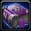

3
Book: Gift of the Wild II
Classes: Druid
Requires Level 60
Use: Teaches Gift of the Wild (Rank 2). |
|
3
Codex: Prayer of Fortitude
Classes: Priest
Requires Level 48
Use: Teaches Prayer of Fortitude (Rank 1). |
|

Libram of Resilience
Unique
Requires Level 50
"Dark runes skitter across the surface." |
|

Recipe: Elixir of Detect Lesser Invisibility
Requires Alchemy (195)
Use: Teaches you how to make an Elixir of Detect Lesser Invisibility.
Requires Level 29
Use: Grants detect lesser invisibility for 10 min.
|
|
Recipe: Elixir of Giants
Requires Alchemy (245)
Use: Teaches you how to make an Elixir of Giants.
Requires Level 38
Use: Increases your Strength by 25 for 1 hour.
|
|
Recipe: Elixir of Greater Firepower
Requires Alchemy (250)
Use: Teaches you how to make an Elixir of Greater Firepower.
Requires Level 40
Use: Increases spell fire damage by up to 40 for 30 min.
|
|
3
Recipe: Gift of Arthas
Requires Alchemy (240)
Use: Teaches you how to make a Gift of Arthas.
Requires Level 38
Use: Increases resistance to shadow by 10. If an enemy strikes the imbiber, the attacker has a 30Fhance of being inflicted with disease that increases their damage taken by 8 for 3 min. Lasts for 30 min.
|
|
Recipe: Invisibility Potion
Requires Alchemy (235)
Use: Teaches you how to make an Invisibility Potion.
Requires Level 37
Use: Gives the imbiber invisibility for 18 sec.
|
|
Recipe: Transmute Undeath to Water
Requires Alchemy (275)
Use: Teaches you how to transmute Essence of Undeath into Essence of Water.
|
|
Recipe: Wildvine Potion
Requires Alchemy (225)
Use: Teaches you how to make a Wildvine potion.
Requires Level 35
Use: Restores 1 to 1500 health and 1 to 1500 mana.
|
|
Recipe: Elixir of Fortitude
Requires Alchemy (175)
Use: Teaches you how to make an Elixir of Fortitude.
Requires Level 25
Use: Increases the player's maximum health by 120 for 1 hour.
|
|
Recipe: Elixir of Lesser Agility
Requires Alchemy (140)
Use: Teaches you how to make an Elixir of Lesser Agility.
Requires Level 18
Use: Increases Agility by 8 for 1 hour.
|
|
Recipe: Mighty Troll's Blood Potion
Requires Alchemy (180)
Use: Teaches you how to make a Mighty Troll's Blood Potion.
Requires Level 26
Use: Regenerate 12 health every 5 sec for 1 hour.
|
|
Plans: Golden Scale Shoulders
Requires Blacksmithing (175)
Use: Teaches you how to make Golden Scale Shoulders.
Binds when equipped
Shoulder Mail
160 Armor
+7 Strength
+6 Spirit
Requires Level 30
|
|
Plans: Mithril Shield Spike
Requires Blacksmithing (215)
Use: Teaches you how to make a Mithril Shield Spike.
Requires Blacksmithing (215)
Use: Attaches a Mithril Spike to your shield that deals damage every time you block with it.
|
|
Plans: Dazzling Mithril Rapier
Requires Blacksmithing (240)
Use: Teaches you how to make a Dazzling Mithril Rapier.
Binds when equipped
Main Hand Sword
34 - 63 Damage Speed 1.70
(28.5 damage per second)
+8 Agility
Requires Level 43
|
|
2
Plans: Golden Scale Cuirass
Requires Blacksmithing (195)
Use: Teaches you how to make a Golden Scale Cuirass.
Binds when equipped
Chest Mail
231 Armor
+14 Strength
+6 Spirit
Requires Level 35
|
|
Plans: Golden Scale Leggings
Requires Blacksmithing (170)
Use: Teaches you how to make Golden Scale Leggings.
Binds when equipped
Legs Mail
184 Armor
+11 Strength
+5 Spirit
Requires Level 29
|
|
Plans: Heavy Mithril Helm
Requires Blacksmithing (245)
Use: Teaches you how to make a Heavy Mithril Helm.
Binds when equipped
Head Plate
469 Armor
+15 Stamina
Requires Level 42
|
|
Plans: Iridescent Hammer
Requires Blacksmithing (140)
Use: Teaches you how to make an Iridescent Hammer.
Binds when equipped
One-Hand Mace
18 - 34 Damage Speed 1.80
(14.4 damage per second)
+3 Strength
+3 Stamina
Requires Level 23
|
|
Plans: Iron Counterweight
Requires Blacksmithing (165)
Use: Teaches you how to make an Iron Counterweight to help balance a two-handed weapon.
Requires Blacksmithing (165)
Use: Attaches a counterweight to a two-handed sword, mace, axe or polearm making it 3 0.000000aster.
|
|
2
Plans: Polished Steel Boots
Requires Blacksmithing (185)
Use: Teaches you how to make Polished Steel Boots.
Binds when equipped
Feet Mail
151 Armor
+11 Stamina
Requires Level 32
|
|
2
Plans: Radiant Boots
Requires Blacksmithing (290)
Use: Teaches you how to make Radiant Boots.
Binds when equipped
Feet Mail
215 Armor
+15 Frost Resistance
+15 Shadow Resistance
Requires Level 53
|
|
Plans: Radiant Breastplate
Requires Blacksmithing (270)
Use: Teaches you how to make a Radiant Breastplate.
Binds when equipped
Chest Mail
293 Armor
+16 Frost Resistance
+16 Shadow Resistance
Requires Level 49
|
|
Plans: Radiant Circlet
Requires Blacksmithing (295)
Use: Teaches you how to make a Radiant Circlet.
Binds when equipped
Head Mail
258 Armor
+18 Frost Resistance
+18 Shadow Resistance
Requires Level 54
|
|
Plans: Shadow Crescent Axe
Requires Blacksmithing (200)
Use: Teaches you how to make a Shadow Crescent Axe.
Binds when equipped
Two-Hand Axe
58 - 87 Damage Speed 2.50
(29.0 damage per second)
+11 Strength
+10 Stamina
Requires Level 35
Requires Two-Handed Axes
|
|
Plans: Thorium Armor
Requires Blacksmithing (250)
Use: Teaches you how to make Thorium Armor.
Binds when equipped
Chest Plate
480 Armor
+8 Arcane Resistance
+8 Fire Resistance
+8 Nature Resistance
+8 Frost Resistance
+8 Shadow Resistance
Requires Level 45
|
|
Plans: Thorium Bracers
Requires Blacksmithing (255)
Use: Teaches you how to make Thorium Bracers.
Binds when equipped
Wrist Plate
214 Armor
+5 Arcane Resistance
+5 Fire Resistance
+5 Nature Resistance
+5 Frost Resistance
+5 Shadow Resistance
Requires Level 46
|
|
Plans: Thorium Helm
Requires Blacksmithing (280)
Use: Teaches you how to make a Thorium Helm.
Binds when equipped
Head Plate
434 Armor
+10 Arcane Resistance
+10 Fire Resistance
+10 Nature Resistance
+10 Frost Resistance
+10 Shadow Resistance
Requires Level 51
|
|
Plans: Thorium Leggings
Requires Blacksmithing (300)
Use: Teaches you how to make Thorium Leggings.
Binds when equipped
Legs Plate
499 Armor
+10 Arcane Resistance
+10 Fire Resistance
+10 Nature Resistance
+10 Frost Resistance
+10 Shadow Resistance
Requires Level 55
|
|
Plans: Thorium Shield Spike
Requires Blacksmithing (275)
Use: Teaches you how to make a Thorium Shield Spike.
Requires Blacksmithing (250)
Use: Attaches a Thorium Spike to your shield that deals damage every time you block with it.
|
|
Plans: Wildthorn Mail
Requires Blacksmithing (270)
Requires Armorsmith
Use: Teaches you how to make Wildthorn Mail.
Binds when equipped
Chest Mail
322 Armor
+5 Stamina
+11 Spirit
Requires Level 49
Equip: Increases damage done by Nature spells and effects by up to 34.
|
|

Formula: Enchant 2H Weapon - Lesser Spirit
Requires Enchanting (110)
Use: Teaches you how to permanently enchant a two-handed weapon so it grants +3 Spirit. |
|
2
Formula: Enchant Boots - Greater Agility
Requires Enchanting (295)
Use: Teaches you how to permanently enchant a pair of boots to grant +7 Agility. |
|
Formula: Enchant Boots - Greater Stamina
Requires Enchanting (260)
Use: Teaches you how to permanently enchant a pair of boots to grant +7 Stamina. |
|
Formula: Enchant Boots - Spirit
Requires Enchanting (275)
Use: Teaches you how to permanently enchant a pair of boots to grant +5 Spirit. |
|
2
Formula: Enchant Bracer - Greater Spirit
Requires Enchanting (220)
Use: Teaches you how to permanently enchant a bracer to give +7 Spirit. |
|
Formula: Enchant Bracer - Lesser Spirit
Requires Enchanting (120)
Use: Teaches you how to permanently enchant a bracer to give +3 Spirit. |
|
Formula: Enchant Bracer - Superior Spirit
Requires Enchanting (270)
Use: Teaches you how to permanently enchant a bracer to give +9 Spirit. |
|
Formula: Enchant Chest - Minor Mana
Requires Enchanting (20)
Use: Teaches you how to permanently enchant a piece of chest armor to give +5 mana. |
|
Schematic: Spellpower Goggles Xtreme
Requires Engineering (225)
Use: Teaches you how to make Spellpower Goggles Xtreme.
Binds when equipped
Head Cloth
46 Armor
Requires Engineering (215)
Equip: Increases damage and healing done by magical spells and effects by up to 21.
|
|
Schematic: Bright-Eye Goggles
Requires Engineering (175)
Use: Teaches you how to make Bright-Eye Goggles.
Binds when equipped
Head Cloth
38 Armor
+9 Stamina
+9 Spirit
Requires Engineering (175)
|
|
Schematic: Catseye Ultra Goggles
Requires Engineering (220)
Use: Teaches you how to make Catseye Ultra Goggles.
Binds when equipped
Head Cloth
47 Armor
Requires Engineering (220)
Equip: Increases your stealth detection.
|
|
Schematic: EZ-Thro Dynamite
Requires Engineering (100)
Use: Teaches you how to make EZ-Thro Dynamite.
Requires Level 10
Use: The dynamite for Non-Engineers that nearly always gets to the target! Inflicts 51 to 69 Fire damage in a 5 yard radius.
|
|
Schematic: Goblin Land Mine
Requires Engineering (195)
Use: Teaches you how to make a Goblin Land Mine.
Requires Engineering (195)
Use: Places the Goblin Land Mine on the ground. It will explode for 394 to 506 fire damage the next time a hostile creature passes near it. The mine has a duration of 1 min.
|
|
Schematic: Lifelike Mechanical Toad
Requires Engineering (265)
Use: Teaches you how to make a Lifelike Mechanical Toad.
Binds when used
Use: Right Click to summon and dismiss your lifelike mechanical toad.
|
|
Schematic: Mithril Heavy-bore Rifle
Requires Engineering (220)
Use: Teaches you how to make a Mithril Heavy-bore Rifle.
Binds when equipped
Gun
41 - 76 Damage Speed 2.90
(20.2 damage per second)
Requires Level 39
Equip: +14 ranged Attack Power.
|
|
Schematic: Moonsight Rifle
Requires Engineering (145)
Use: Teaches you how to make a Moonsight Rifle.
Binds when equipped
Gun
14 - 26 Damage Speed 1.70
(11.8 damage per second)
Requires Level 24
|
|
Schematic: Portable Bronze Mortar
Requires Engineering (165)
Use: Teaches you how to make a Portable Bronze Mortar.
Requires Engineering (165)
Use: Inflicts 85 to 115 Fire damage and stuns targets in a 5 yard radius for 2 sec. Any damage will break the effect.
|
|
Schematic: Shadow Goggles
Requires Engineering (120)
Use: Teaches you how to make Shadow Goggles.
Binds when equipped
Head Cloth
31 Armor
+5 Intellect
+6 Spirit
Requires Engineering (120)
|
|
Schematic: Spellpower Goggles Xtreme Plus
Requires Engineering (270)
Use: Teaches you how to make a Spellpower Goggles Xtreme Plus.
Binds when equipped
Head Cloth
57 Armor
Requires Engineering (270)
Equip: Increases damage and healing done by magical spells and effects by up to 27.
|
|
Schematic: Thorium Rifle
Requires Engineering (260)
Use: Teaches you how to make a Thorium Rifle.
Binds when equipped
Gun
42 - 79 Damage Speed 2.50
(24.2 damage per second)
Requires Level 47
Equip: +17 ranged Attack Power.
|
|
Schematic: Thorium Shells
Requires Engineering (285)
Use: Teaches you how to make Thorium Shells.
Projectile Bullet
Adds 17.5 damage per second
Requires Level 52
|
|
Schematic: World Enlarger
Requires Engineering (260)
Requires Gnomish Engineer
Use: Teaches you how to make a World Enlarger.
Requires Engineering (250)
Requires Gnomish Engineer
Use: Enlarges the entire world for 5 min or until you attack.
"Only Gnomish Technology could invent a device that affects the entire world!"
|
|
Pattern: Devilsaur Leggings
Requires Leatherworking (300)
Requires Tribal Leatherworking
Use: Teaches you how to craft a Devilsaur Leggings.
Binds when equipped
Legs Leather
148 Armor
+12 Stamina
Requires Level 55
Equip: +46 Attack Power.
Equip: Improves your chance to get a critical strike by 1
Devilsaur Armor (0/2)
Devilsaur Leggings
Devilsaur Gauntlets
(2) Set: Improves your chance to hit by 2
|
|
2
Pattern: Green Dragonscale Leggings
Requires Leatherworking (270)
Requires Dragonscale Leatherworking
Use: Teaches you how to craft Green Dragonscale Leggings.
Binds when equipped
Legs Mail
282 Armor
+10 Stamina
+22 Spirit
+11 Nature Resistance
Requires Level 49
Green Dragon Mail (0/3)
Green Dragonscale Breastplate
Green Dragonscale Leggings
Green Dragonscale Gauntlets
(2) Set: Restores 3 mana per 5 sec.
(3) Set: Allows 1565210106f your Mana regeneration to continue while casting.
|
|
3
Pattern: Living Leggings
Requires Leatherworking (285)
Requires Elemental Leatherworking
Use: Teaches you how to craft Living Leggings.
Binds when equipped
Legs Leather
142 Armor
+8 Stamina
+25 Spirit
+5 Nature Resistance
Requires Level 52
Equip: Increases healing done by spells and effects by up to 26.
|
|
Pattern: Big Voodoo Cloak
Requires Leatherworking (240)
Use: Teaches you how to craft a Big Voodoo Cloak.
Binds when equipped
Back
31 Armor
+9 Intellect
+5 Spirit
Requires Level 43
|
|
Pattern: Big Voodoo Pants
Requires Leatherworking (240)
Use: Teaches you how to craft Big Voodoo Pants.
Binds when equipped
Legs Leather
110 Armor
+10 Intellect
+15 Spirit
Requires Level 42
|
|
Pattern: Big Voodoo Robe
Requires Leatherworking (215)
Use: Teaches you how to craft a Big Voodoo Robe.
Binds when equipped
Chest Leather
117 Armor
+14 Intellect
+9 Spirit
Requires Level 38
|
|
Pattern: Chimeric Vest
Requires Leatherworking (290)
Requires Tribal Leatherworking
Use: Teaches you how to craft a Chimeric Vest.
Binds when equipped
Chest Leather
150 Armor
+16 Arcane Resistance
+17 Nature Resistance
Requires Level 53
|
|
Pattern: Dark Leather Gloves
Requires Leatherworking (120)
Use: Teaches you how to craft Dark Leather Gloves.
Binds when equipped
Hands Leather
54 Armor
Requires Level 21
Equip: Increases your lockpicking skill slightly.
|
|
Pattern: Fine Leather Boots
Requires Leatherworking (90)
Use: Teaches you how to craft Fine Leather Boots.
Feet Leather
49 Armor
Requires Level 13
|
|
Pattern: Fine Leather Gloves
Requires Leatherworking (75)
Use: Teaches you how to craft Fine Leather Gloves.
Binds when equipped
Hands Leather
43 Armor
+2 Intellect
+2 Spirit
Requires Level 10
|
|
3
Pattern: Frostsaber Gloves
Requires Leatherworking (295)
Requires Tribal Leatherworking
Use: Teaches you how to craft Frostsaber Gloves.
Binds when equipped
Hands Leather
95 Armor
+13 Frost Resistance
+12 Shadow Resistance
Requires Level 54
|
|
Pattern: Pilferer's Gloves
Requires Leatherworking (140)
Use: Teaches you how to craft Pilferer's Gloves.
Binds when equipped
Hands Leather
56 Armor
+8 Agility
Requires Level 23
|
|
2
Pattern: Runic Leather Bracers
Requires Leatherworking (275)
Use: Teaches you how to craft Runic Leather Bracers.
Binds when equipped
Wrist Leather
63 Armor
+10 Intellect
+10 Spirit
Requires Level 50
|
|
Pattern: Runic Leather Gauntlets
Requires Leatherworking (270)
Use: Teaches you how to craft Runic Leather Gauntlets.
Binds when equipped
Hands Leather
88 Armor
+8 Intellect
+14 Spirit
Requires Level 49
|
|
Pattern: Thick Murloc Armor
Requires Leatherworking (170)
Use: Teaches you how to craft Thick Murloc Armor.
Binds when equipped
Chest Leather
100 Armor
+9 Strength
+8 Stamina
Requires Level 29
|
|
Pattern: Tough Scorpid Breastplate
Requires Leatherworking (220)
Use: Teaches you how to craft a Tough Scorpid Breastplate.
Binds when equipped
Chest Mail
245 Armor
+15 Agility
+7 Spirit
Requires Level 39
|
|
3
Pattern: Tough Scorpid Gloves
Requires Leatherworking (225)
Use: Teaches you how to craft Tough Scorpid Gloves.
Binds when equipped
Hands Mail
155 Armor
+10 Agility
+9 Spirit
Requires Level 40
|
|
Pattern: Wicked Leather Headband
Requires Leatherworking (280)
Use: Teaches you how to craft a Wicked Leather Headband.
Binds when equipped
Head Leather
118 Armor
+16 Agility
+16 Stamina
Requires Level 51
|
|
Pattern: Turtle Scale Gloves
Requires Leatherworking (205)
Use: Teaches you how to craft Turtle Scale Gloves.
Binds when equipped
Hands Mail
146 Armor
+7 Stamina
+6 Intellect
+6 Spirit
Requires Level 36
|
|
2
Pattern: Brightcloth Robe
Requires Tailoring (270)
Use: Teaches you how to sew a Brightcloth Robe.
Binds when equipped
Chest Cloth
70 Armor
+16 Frost Resistance
+15 Shadow Resistance
Requires Level 49
|
|
Pattern: Crimson Silk Shoulders
Requires Tailoring (190)
Use: Teaches you how to sew Crimson Silk Shoulders.
Binds when equipped
Shoulder Cloth
38 Armor
+8 Intellect
+7 Spirit
Requires Level 33
|
|
Pattern: Earthen Silk Belt
Requires Tailoring (195)
Use: Teaches you how to sew an Earthen Silk Belt.
Binds when equipped
Waist Cloth
29 Armor
+8 Stamina
+8 Spirit
Requires Level 34
|
|
2
Pattern: Frostweave Tunic
Requires Tailoring (255)
Use: Teaches you how to sew a Frostweave Tunic.
Binds when equipped
Chest Cloth
66 Armor
+11 Intellect
Requires Level 46
Equip: Increases damage done by Frost spells and effects by up to 24.
|
|
Pattern: Green Silk Armor
Requires Tailoring (165)
Use: Teaches you how to sew Green Silk Armor.
Binds when equipped
Chest Cloth
45 Armor
+13 Intellect
Requires Level 28
|
|
Pattern: Mooncloth Bag
Requires Tailoring (300)
Use: Teaches you how to sew a Mooncloth Bag.
16 Slot Bag
|
|
Pattern: Red Mageweave Pants
Requires Tailoring (215)
Use: Teaches you how to sew Red Mageweave Pants.
Binds when equipped
Legs Cloth
49 Armor
+12 Intellect
Requires Level 38
Equip: Increases damage and healing done by magical spells and effects by up to 14.
|
|
Pattern: Red Mageweave Shoulders
Requires Tailoring (235)
Use: Teaches you how to sew Red Mageweave Shoulders.
Binds when equipped
Shoulder Cloth
46 Armor
+15 Intellect
Requires Level 42
|
|
Pattern: Red Mageweave Vest
Requires Tailoring (215)
Use: Teaches you how to sew a Red Mageweave Vest.
Binds when equipped
Chest Cloth
57 Armor
+18 Intellect
Requires Level 38
|
|
2
Pattern: Runecloth Headband
Requires Tailoring (295)
Use: Teaches you how to sew a Runecloth Headband.
Binds when equipped
Head Cloth
62 Armor
+20 Intellect
+13 Spirit
Requires Level 54
|
|
Pattern: Runecloth Pants
Requires Tailoring (285)
Use: Teaches you how to sew Runecloth Pants.
Binds when equipped
Legs Cloth
65 Armor
+12 Intellect
+20 Spirit
Requires Level 52
|
|
Pattern: Runecloth Tunic
Requires Tailoring (260)
Use: Teaches you how to sew a Runecloth Tunic.
Binds when equipped
Chest Cloth
68 Armor
+11 Intellect
+17 Spirit
Requires Level 47
|
|
2
Pattern: Spider Belt
Requires Tailoring (180)
Use: Teaches you how to sew a Spider Belt.
Binds when equipped
Waist Cloth
27 Armor
+8 Intellect
Requires Level 31
Use: Removes existing Immobilizing effects and makes you immune to Immobilizing effects for 5 sec.
|
|
 1198
1198